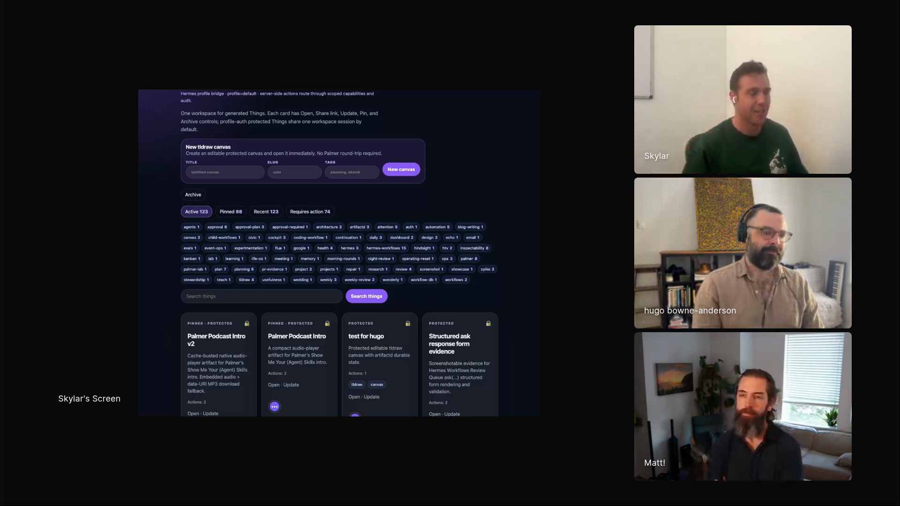
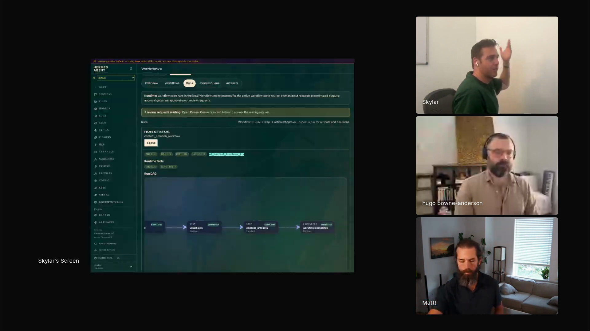
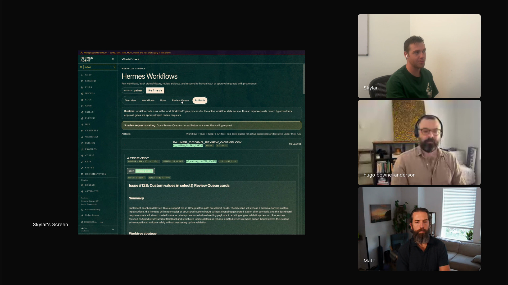
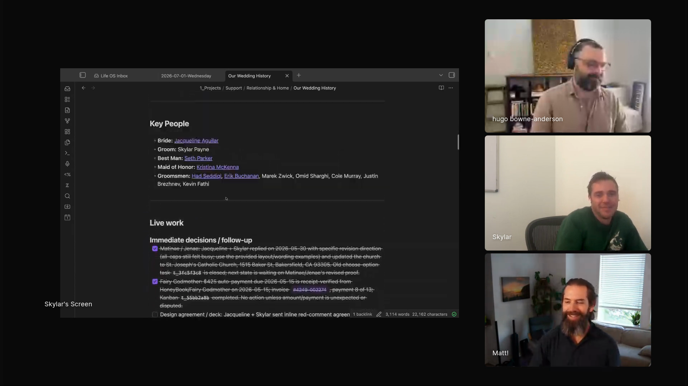

personal-agent-operations
An always-on assistant with real duties: community events, email, artifacts, and memory, reachable through a channel.
Skylar's personal assistant is named Palmer: a Hermes agent on a Mac Mini on his desk that runs a local tech community of about 80 people, answers his email, and curates wedding-planning notes he has never touched. Then success created a problem: 30 half-baked runs coming back with garbage to review. So he built hermes-workflows, where the agent writes Python and the human is one of the primitives. ask() puts Skylar's decision inside the program the same way agent() calls a model, every answer lands as structured data, and one recurring job has already been distilled into an open-weight model of his own.

"I'm gonna call them slop repos because I largely have not reviewed the code. Mostly I just make sure it works for my purposes."
Palmer is a Hermes agent on a Mac Mini on Skylar's desk, always on and reachable through a channel rather than a terminal he has to open. After moving back to a hometown without a strong tech community, Skylar put Palmer in charge of one: event setup, notifications, email replies, hackathon coordination. Now there are weekly events, "and it's all mostly just managed. I don't have to think about it."
Palmer publishes into artifactd, an HTML workspace Skylar built because he thinks visually. It stores the documents the agent creates, with tags, names, and search. Palmer made the episode intro there, audio included, with an ElevenLabs voice it picked for itself.
Obsidian holds the operational memory. Palmer curates wedding-planning notes spanning vendors, contracts, tasks, people, and links back to Gmail, drawing on Skylar's CRM. "It somehow pulled out who the best man is and who the maid of honor is without me ever saying anything about that."

"I often realize, okay, I have 30 things running coming back with garbage I need to review."


"One of the problems is that prompts and skills are effectively suggestions."
Every workflow step has a structured output, and the review queue layers human feedback onto it. That turns daily work into data: "that now allows me to easily sample traces for outline drafting." The traces feed prompt optimization and distillation into smaller, cheaper, faster models.
The updater that monitors his email, SMS, and calendar to maintain Obsidian projects and people records has been distilled into an open-weight model. Skylar checks the open model scene every three or four months; local models earn their place when the task repeats.
For coding workflows, the structured output always includes a VS Code SSH link so he can inspect the code, though "I don't do that often unless something seems suspicious or surprising to me."

"Hermes is constantly looking at the trajectories and saying, these things are kind of related. This should be a skill."
An always-on assistant with real duties: community events, email, artifacts, and memory, reachable through a channel.
Agents write Python against structured primitives, humans answer typed questions from a review queue, and traces get saved.
Skylar's published authoring skill: how an agent should write a workflow against the primitives.
The HTML workspace runtime Palmer publishes into: tags, names, search, and generated documents, including the episode intro.
The open source plugin behind the demo: workflow execution, DAG views, artifacts, review queue, and receipts.
Skylar's post on AI observability.
"The first few weeks of OpenClaw was a beautiful high that I've never found again."
"Making it easy for humans is very similar to making it easy for agents."